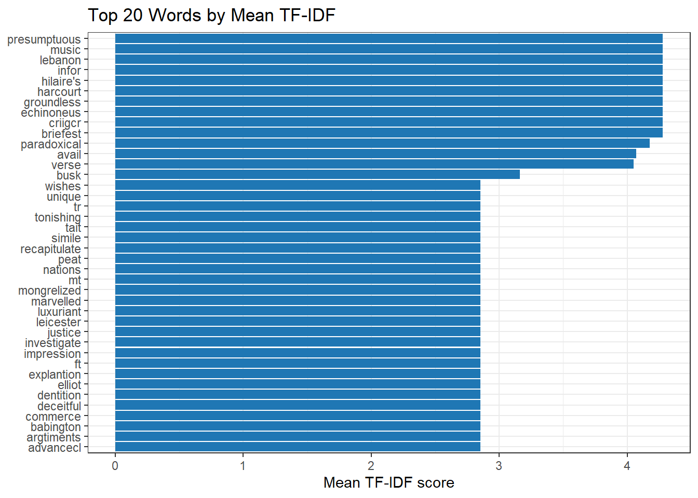
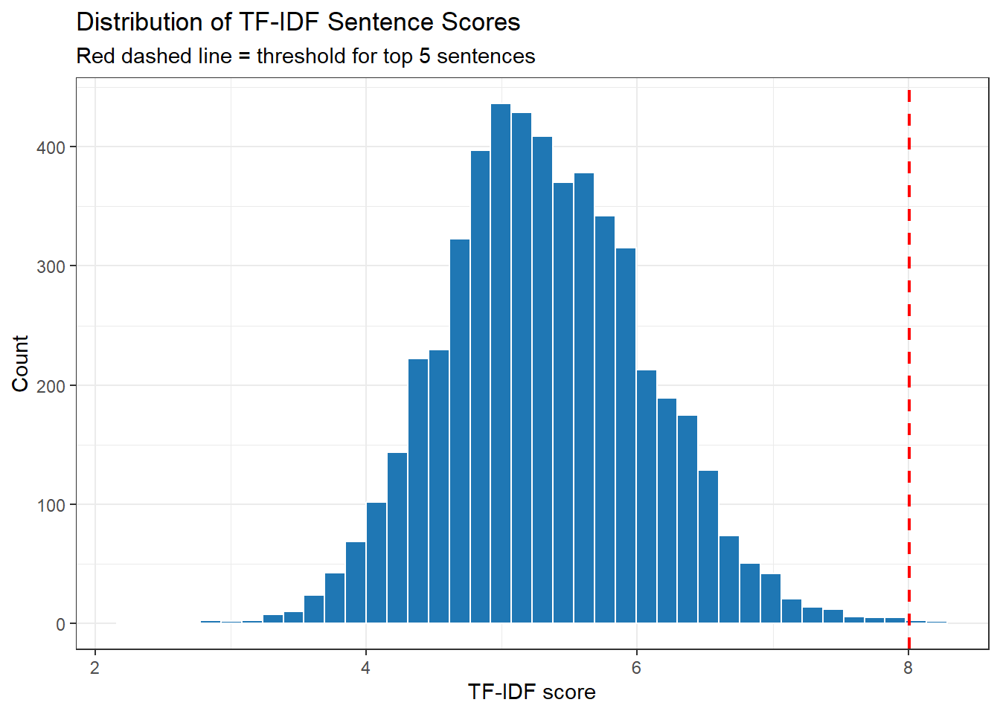
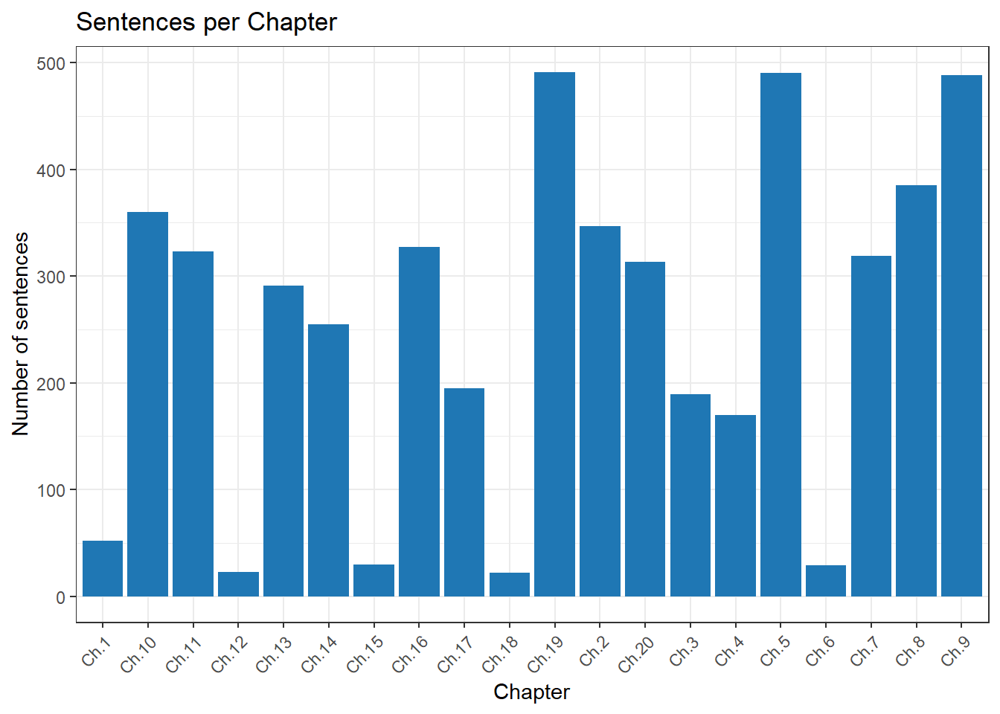

Automated Text Summarisation with R
This tutorial covers automated text summarisation in R using extractive methods, including sentence scoring approaches, the TextRank algorithm, the creation of automatic summaries from single documents and document collections, and methods for evaluating summary quality. It is aimed at researchers in digital humanities and computational linguistics who need to condense large volumes of text automatically.

Introduction

This tutorial introduces automated text summarisation in R — a set of methods for condensing texts by extracting or generating their most important content. Text summarisation is increasingly important in corpus linguistics, digital humanities, and applied language research: the volume of textual data available far exceeds what any researcher can read manually, and automated methods provide scalable tools for navigating large collections.
The tutorial covers two broad families of summarisation: extractive summarisation, which selects a subset of the original sentences judged to be most representative or central, and abstractive summarisation, which generates new sentences that paraphrase the source text. We focus primarily on extractive methods — which are easier to implement, more transparent, and more widely used in linguistic research — and discuss abstractive approaches as an optional extension.
Within extractive summarisation we cover three approaches: the LexRank graph-based algorithm (via the lexRankr package), a term-frequency–inverse document frequency (TF-IDF) scoring approach, and a sentence-position heuristic. A worked corpus example applies summarisation to the chapters of a classic text to produce a structured summary.
Prerequisite Tutorials
Before working through this tutorial, we recommend familiarity with:
- Getting Started with R — R objects, basic syntax, RStudio orientation
- String Processing in R — regular expressions,
stringr - Loading and Saving Data in R — reading text files into R
- Web Scraping with R — extracting text from web pages
Learning Objectives
By the end of this tutorial you will be able to:
- Explain the difference between extractive and abstractive summarisation and when each is appropriate
- Apply LexRank summarisation to web-scraped and locally loaded texts using
lexRankr - Implement TF-IDF sentence scoring as a transparent alternative to graph-based methods
- Apply a sentence-position heuristic and understand its linguistic rationale
- Compare summarisation outputs from different methods and evaluate their strengths
- Apply summarisation across the chapters of a multi-section text using a loop
- Understand the capabilities and limitations of large language model-based abstractive summarisation
Citation
Martin Schweinberger. 2026. Automated Text Summarisation with R. The Language Technology and Data Analysis Laboratory (LADAL), The University of Queensland, Australia. url: https://ladal.edu.au/tutorials/text_summarisation/text_summarisation.html (Version 3.1.1). doi: 10.5281/zenodo.19332985.
What Is Text Summarisation?
Section Overview
What you will learn: The distinction between extractive and abstractive summarisation; the main algorithmic approaches to extractive summarisation (graph-based, TF-IDF, position-based); where automated summarisation is and is not appropriate for linguistic research; and how to evaluate a summary
Extractive vs. Abstractive Summarisation
Extractive summarisation selects a subset of sentences (or passages) from the source text and presents them as the summary. No new text is generated: every sentence in the output is a verbatim copy of a sentence from the input. Extractive methods are transparent, reproducible, and appropriate when fidelity to the original wording matters. They are the dominant approach in corpus linguistics and computational text analysis.
Abstractive summarisation generates new sentences that paraphrase or compress the source content. The output may contain wording that does not appear anywhere in the original text. Large language models (LLMs) like GPT-4 and Claude are capable of high-quality abstractive summarisation but introduce challenges: the output is not directly traceable to source sentences, models can introduce factual errors or “hallucinate” content, and the process is not fully reproducible. Abstractive summarisation is briefly discussed in the final section of this tutorial.
The key distinction is illustrated in the table below:
| Property | Extractive | Abstractive |
|---|---|---|
| Source fidelity | Always verbatim | May paraphrase or fabricate |
| Transparency | High | Lower |
| Reproducibility | Deterministic | Stochastic (LLMs) |
| Language coverage | Language-agnostic | Model-dependent |
| Typical use in linguistics | Corpus navigation, content extraction | Paraphrase generation, annotation |
Approaches to Extractive Summarisation
Three main approaches to extractive summarisation are covered in this tutorial:
Graph-based methods (LexRank, TextRank) model the text as a graph in which sentences are nodes and edges represent the lexical similarity between them. A sentence’s importance is measured by its centrality in the graph — how similar it is to many other sentences. The most central sentences are selected for the summary. This approach rewards sentences that are representative of the main topics discussed across the whole text, rather than locally prominent sentences.
TF-IDF scoring computes a relevance score for each sentence based on the term frequency–inverse document frequency weights of the words it contains. A sentence scores highly if it contains many words that are frequent in this text but rare in a reference corpus. This approach rewards sentences that contain the distinctive vocabulary of the document and is particularly transparent: the score of each sentence is a direct function of its word content.
Position heuristics exploit the well-established discourse organisation principle that important content tends to appear at the beginning and end of documents and at the beginning of paragraphs. A position score assigns higher weight to sentences appearing earlier in a text. This is the simplest approach and often performs surprisingly well for news articles and academic abstracts, which follow predictable organisational conventions.
When Is Automated Summarisation Appropriate?
Automated summarisation is appropriate when:
- the text is too long to read in full and an overview is needed
- a collection of documents needs to be navigated and key passages identified
- a researcher wants to identify which sentences are most representative of a topic
- summarisation is used as a preprocessing step for further analysis
It is not a substitute for careful reading when:
- the nuance of argument structure matters (summaries flatten hedging, counter-arguments, and qualifications)
- attribution and quotation accuracy are critical
- the text has non-standard organisation (e.g., poetry, transcribed conversation, highly technical tables)
Evaluating a Summary
The standard automatic metric for summarisation evaluation is ROUGE (Recall-Oriented Understudy for Gisting Evaluation), which measures the overlap between the candidate summary and a human-written reference summary. The most common variant, ROUGE-1, counts unigram overlaps; ROUGE-2 counts bigram overlaps. For linguistic research purposes, informal inspection is often more appropriate than ROUGE: does the summary cover the main claims? Does it avoid trivial or peripheral sentences?
Exercises: Concepts
Q1. A researcher uses extractive summarisation on a set of newspaper editorials and obtains a three-sentence summary for each article. A colleague argues that because the summaries contain the original sentences verbatim, they are “not really summaries — they are just quotations.” Is this a valid criticism?
Q2. Which summarisation approach is most appropriate when you want to identify the sentences in a long academic article that are most representative of its overall content (not just its introduction)?
Setup
Installing Packages
Code
# Run once — comment out after installation
install.packages(c(
"lexRankr", # LexRank extractive summarisation
"tidytext", # TF-IDF scoring
"dplyr", # data manipulation
"stringr", # string processing
"stringi", # sentence boundary detection
"tidyr", # data reshaping
"ggplot2", # visualisation
"flextable", # formatted tables
"xml2", # HTML parsing (web scraping)
"rvest", # web scraping
"here", # file paths
"purrr", # functional programming
"checkdown" # interactive exercises
))Loading Packages
Code
library(lexRankr)
library(tidytext)
library(dplyr)
library(stringr)
library(stringi)
library(tidyr)
library(ggplot2)
library(flextable)
library(xml2)
library(rvest)
library(here)
library(purrr)
library(checkdown)LexRank Summarisation
Section Overview
What you will learn: How the LexRank algorithm works; how to apply lexRankr::lexRank() to a web-scraped article and to a locally loaded text; how to control the number of summary sentences; and how to reorder extracted sentences into chronological order
How LexRank Works
LexRank (Erkan and Radev 2004) represents a document as a graph in which each sentence is a node. Edges between nodes are weighted by the cosine similarity of the sentences’ TF-IDF vectors — sentences that share many of the same important words have high-weight edges. The algorithm then applies a variant of Google’s PageRank to identify which nodes are most central in the graph. Sentences with high centrality scores are selected for the summary.
The key properties of LexRank are:
- It rewards globally representative sentences — those that are similar to many other sentences across the whole document
- It is unsupervised — no labelled training data or pre-trained model is needed
- It is language-agnostic — it works for any language with whitespace-delimited words
- It naturally avoids redundancy — the continuous variant (used via
continuous = TRUE) down-weights sentences that are too similar to already-selected ones
Applying LexRank to a Web-Scraped Article
We download a Guardian article about the G20 summit and apply LexRank to identify the three most central sentences:
Code
url <- "https://www.theguardian.com/world/2017/jun/26/angela-merkel-and-donald-trump-head-for-clash-at-g20-summit"
page <- xml2::read_html(url)
text <- page |>
rvest::html_nodes("p") |>
rvest::html_text() |>
(\(x) x[nchar(x) > 0])()
# inspect the first few paragraphs
head(text, 4)[1] "German chancellor plans to make climate change, free trade and mass migration key themes in Hamburg, putting her on collision course with US"
[2] "A clash between Angela Merkel and Donald Trump appears unavoidable after Germany signalled that it will make climate change, free trade and the management of forced mass global migration the key themes of the G20 summit in Hamburg next week."
[3] "The G20 summit brings together the world’s biggest economies, representing 85% of global gross domestic product (GDP), and Merkel’s chosen agenda looks likely to maximise American isolation while attempting to minimise disunity amongst others."
[4] "The meeting, which is set to be the scene of large-scale street protests, will also mark the first meeting between Trump and the Russian president, Vladimir Putin, as world leaders." Code
top3 <- lexRankr::lexRank(
text,
docId = rep(1, length(text)), # single document
n = 3, # number of sentences to extract
continuous = TRUE # use continuous centrality scores
)Parsing text into sentences and tokens...DONE
Calculating pairwise sentence similarities...DONE
Applying LexRank...DONE
Formatting Output...DONECode
top3 docId sentenceId
1 1 1_2
2 1 1_5
3 1 1_16
sentence
1 A clash between Angela Merkel and Donald Trump appears unavoidable after Germany signalled that it will make climate change, free trade and the management of forced mass global migration the key themes of the G20 summit in Hamburg next week.
2 Trump has already rowed with Europe once over climate change and refugees at the G7 summit in Italy, and now looks set to repeat the experience in Hamburg but on a bigger stage, as India and China join in the criticism of Washington.
3 But the G7, and Trump’s subsequent decision to shun the Paris climate change treaty, clearly left a permanent mark on her, leading to her famous declaration of independence four days later at a Christian Social Union (CSU) rally in a Bavarian beer tent.
value
1 0.06017
2 0.05656
3 0.04975The sentenceId column encodes document and sentence positions. We extract and display the sentences in chronological order:
Code
top3 |>
dplyr::mutate(
sentenceId = as.numeric(stringr::str_remove_all(sentenceId, ".*_"))
) |>
dplyr::arrange(sentenceId) |>
dplyr::pull(sentence)[1] "A clash between Angela Merkel and Donald Trump appears unavoidable after Germany signalled that it will make climate change, free trade and the management of forced mass global migration the key themes of the G20 summit in Hamburg next week."
[2] "Trump has already rowed with Europe once over climate change and refugees at the G7 summit in Italy, and now looks set to repeat the experience in Hamburg but on a bigger stage, as India and China join in the criticism of Washington."
[3] "But the G7, and Trump’s subsequent decision to shun the Paris climate change treaty, clearly left a permanent mark on her, leading to her famous declaration of independence four days later at a Christian Social Union (CSU) rally in a Bavarian beer tent."Applying LexRank to a Locally Loaded Text
We now apply LexRank to Charles Darwin’s On the Origin of Species, stored as an .rda file:
Code
darwin_raw <- base::readRDS("tutorials/text_summarisation/data/origindarwin.rda", "rb")
# Coerce to UTF-8, replacing any invalid bytes with a space
darwin <- stringi::stri_enc_toutf8(darwin_raw, is_unknown_8bit = TRUE,
validate = TRUE)
darwin <- stringr::str_replace_all(darwin, "[^\u0001-\uFFEF]", " ")
# inspect structure
length(darwin)[1] 20001Code
substr(paste(darwin, collapse = " "), 1, 500)[1] "THE ORIGIN OF SPECIES BY CHARLES DARWIN AN HISTORICAL SKETCH OF THE PROGRESS OF OPINION ON THE ORIGIN OF SPECIES INTRODUCTION When on board H.M.S. 'Beagle,' as naturalist, I was much struck with certain facts in the distribution of the organic beings in- habiting South America, and in the geological relations of the present to the past inhabitants of that continent. These facts, as will be seen in the latter chapters of this volume, seemed to throw some light on the origin of species"We split the text into individual sentences using stringi::stri_split_boundaries():
Code
darwin_text <- paste(darwin, collapse = " ")
darwin_sents <- stringi::stri_split_boundaries(darwin_text,
type = "sentence")[[1]] |>
stringr::str_squish() |>
(\(x) x[nchar(x) > 20])()
length(darwin_sents)[1] 5217Code
darwin_top5 <- lexRankr::lexRank(
darwin_sents[1:200],
docId = rep("1", 200), # character, not integer
n = 5,
continuous = TRUE
)Parsing text into sentences and tokens...DONE
Calculating pairwise sentence similarities...DONE
Applying LexRank...DONE
Formatting Output...DONECode
darwin_top5 |>
dplyr::mutate(
sentenceId = as.numeric(stringr::str_remove_all(sentenceId, ".*_"))
) |>
dplyr::arrange(sentenceId) |>
dplyr::pull(sentence)[1] "ORIGIN OF SPECIES CHAPTER I Variation under Domestication Causes of variability Effects of habit and the use or disuse of parts- Correlated variation Inheritance Character of domestic varie- ties Difificulty of distinguishing between varieties and species Origin of domestic varieties from one or more species Domestic pigeons, their differences and origin Principles of selection, an- ciently followed, their efifects Methodical and unconscious selection Unknown origin of our domestic productions Circum- stances favourable to man's power of selection CAUSES OF VARIABILITY WHEN we compare the individuals of the same variety or sub-variety of our older cultivated plants and animals, one of the first points which strikes us is, that they generally differ more from each other than do the individuals of any one species or variety in a state of nature."
[2] "And if we reflect on the vast diversity of the plants and animals which have been cultivated, and which have varied during all ages under the most different climates and treatment, we are driven to conclude that this great varia- bility is due to our domestic productions having been raised under conditions of life not so uniform as, and somewhat different from, those to which the parent species had been exposed under nature."
[3] "CHARACTER OF DOMESTIC VARIETIES; DIFFICULTY OF DISTINGUISHING BETWEEN VARIETIES AND SPECIES; ORIGIN OF DOMESTIC VARIETIES FROM ONE OR MORE SPECIES When we look to the hereditary varieties or races of our domestic animals and plants, and compare them with closely allied species, we generally perceive in each domestic race, as already remarked, less uniformity of character than in true species."
[4] "I cannot doubt that if other animals and plants, equal in number to our domesticated productions, and belonging to equally diverse classes and countries, were taken from a state of nature, and could be made to breed for an equal number of genera- CHARACTER OF DOMESTIC VARIETIES 35 tions under domestication, they would on an average vary as largely as the parent species of our existing domesticated productions have varied."
[5] "I have, after a laborious collection of all known facts, come to the conclusion that several wild species of Canidc'c have been tamed, and that their blood, in some cases mingled together, flows in the veins of our domestic breeds." Controlling the Number of Extracted Sentences
The n argument controls how many sentences are extracted. We compare one-sentence, three-sentence, and five-sentence summaries:
Computational Note: Sentence Subset
LexRank computes pairwise cosine similarities between all sentences — an O(n²) operation. Applied to the full Origin of Species (several thousand sentences) this takes hours on a standard laptop. Throughout this section we therefore work with the first 200 sentences. For your own texts, a subset of 200–500 sentences is usually sufficient to produce a representative summary; for longer texts consider splitting by chapter or section first (as demonstrated in the Worked Corpus Example section below).
Code
for (n_sents in c(1, 3, 5)) {
cat("\n--- Top", n_sents, "sentence(s) ---\n")
res <- lexRankr::lexRank(
darwin_sents[1:200],
docId = rep("1", 200),
n = n_sents,
continuous = TRUE
)
res |>
dplyr::mutate(
sentenceId = as.numeric(stringr::str_remove_all(sentenceId, ".*_"))
) |>
dplyr::arrange(sentenceId) |>
dplyr::pull(sentence) |>
cat(sep = "\n")
}
--- Top 1 sentence(s) ---
Parsing text into sentences and tokens...DONE
Calculating pairwise sentence similarities...DONE
Applying LexRank...DONE
Formatting Output...DONE
ORIGIN OF SPECIES CHAPTER I Variation under Domestication Causes of variability Effects of habit and the use or disuse of parts- Correlated variation Inheritance Character of domestic varie- ties Difificulty of distinguishing between varieties and species Origin of domestic varieties from one or more species Domestic pigeons, their differences and origin Principles of selection, an- ciently followed, their efifects Methodical and unconscious selection Unknown origin of our domestic productions Circum- stances favourable to man's power of selection CAUSES OF VARIABILITY WHEN we compare the individuals of the same variety or sub-variety of our older cultivated plants and animals, one of the first points which strikes us is, that they generally differ more from each other than do the individuals of any one species or variety in a state of nature.
--- Top 3 sentence(s) ---
Parsing text into sentences and tokens...DONE
Calculating pairwise sentence similarities...DONE
Applying LexRank...DONE
Formatting Output...DONE
ORIGIN OF SPECIES CHAPTER I Variation under Domestication Causes of variability Effects of habit and the use or disuse of parts- Correlated variation Inheritance Character of domestic varie- ties Difificulty of distinguishing between varieties and species Origin of domestic varieties from one or more species Domestic pigeons, their differences and origin Principles of selection, an- ciently followed, their efifects Methodical and unconscious selection Unknown origin of our domestic productions Circum- stances favourable to man's power of selection CAUSES OF VARIABILITY WHEN we compare the individuals of the same variety or sub-variety of our older cultivated plants and animals, one of the first points which strikes us is, that they generally differ more from each other than do the individuals of any one species or variety in a state of nature.
And if we reflect on the vast diversity of the plants and animals which have been cultivated, and which have varied during all ages under the most different climates and treatment, we are driven to conclude that this great varia- bility is due to our domestic productions having been raised under conditions of life not so uniform as, and somewhat different from, those to which the parent species had been exposed under nature.
I cannot doubt that if other animals and plants, equal in number to our domesticated productions, and belonging to equally diverse classes and countries, were taken from a state of nature, and could be made to breed for an equal number of genera- CHARACTER OF DOMESTIC VARIETIES 35 tions under domestication, they would on an average vary as largely as the parent species of our existing domesticated productions have varied.
--- Top 5 sentence(s) ---
Parsing text into sentences and tokens...DONE
Calculating pairwise sentence similarities...DONE
Applying LexRank...DONE
Formatting Output...DONE
ORIGIN OF SPECIES CHAPTER I Variation under Domestication Causes of variability Effects of habit and the use or disuse of parts- Correlated variation Inheritance Character of domestic varie- ties Difificulty of distinguishing between varieties and species Origin of domestic varieties from one or more species Domestic pigeons, their differences and origin Principles of selection, an- ciently followed, their efifects Methodical and unconscious selection Unknown origin of our domestic productions Circum- stances favourable to man's power of selection CAUSES OF VARIABILITY WHEN we compare the individuals of the same variety or sub-variety of our older cultivated plants and animals, one of the first points which strikes us is, that they generally differ more from each other than do the individuals of any one species or variety in a state of nature.
And if we reflect on the vast diversity of the plants and animals which have been cultivated, and which have varied during all ages under the most different climates and treatment, we are driven to conclude that this great varia- bility is due to our domestic productions having been raised under conditions of life not so uniform as, and somewhat different from, those to which the parent species had been exposed under nature.
CHARACTER OF DOMESTIC VARIETIES; DIFFICULTY OF DISTINGUISHING BETWEEN VARIETIES AND SPECIES; ORIGIN OF DOMESTIC VARIETIES FROM ONE OR MORE SPECIES When we look to the hereditary varieties or races of our domestic animals and plants, and compare them with closely allied species, we generally perceive in each domestic race, as already remarked, less uniformity of character than in true species.
I cannot doubt that if other animals and plants, equal in number to our domesticated productions, and belonging to equally diverse classes and countries, were taken from a state of nature, and could be made to breed for an equal number of genera- CHARACTER OF DOMESTIC VARIETIES 35 tions under domestication, they would on an average vary as largely as the parent species of our existing domesticated productions have varied.
I have, after a laborious collection of all known facts, come to the conclusion that several wild species of Canidc'c have been tamed, and that their blood, in some cases mingled together, flows in the veins of our domestic breeds.
Exercises: LexRank
Q3. LexRank selects sentences with high centrality in the sentence-similarity graph. What type of sentence tends to score highly, and what type tends to score low?
Q4. You run lexRankr::lexRank() with continuous = TRUE and continuous = FALSE. What is the main practical difference between these two options?
TF-IDF Sentence Scoring
Section Overview
What you will learn: How TF-IDF weights sentences by the distinctiveness of their vocabulary; how to compute sentence-level TF-IDF scores using tidytext; how to select the top-scoring sentences as an extractive summary; and how TF-IDF summarisation compares to LexRank
TF-IDF as a Sentence Scoring Method
Term Frequency–Inverse Document Frequency (TF-IDF) is a classic information retrieval measure that weights a word by how often it appears in a particular document (term frequency, TF) relative to how often it appears across a collection of documents (inverse document frequency, IDF). Words that are frequent in a document but rare across the collection are given high weight — they are the distinctive vocabulary of that document.
For summarisation, we score each sentence by summing the TF-IDF weights of its constituent words. A sentence that contains many high-TF-IDF words is considered more informative than one filled with common function words. This approach is:
- transparent: the score of each sentence is directly traceable to specific words
- interpretable: the top-scoring words reveal what the document is “about”
- flexible: it can be adapted for multi-document summarisation by computing IDF across the full collection
Computing TF-IDF Scores
We use the tidytext package to tokenise the text, compute TF-IDF weights, and score sentences:
Code
# Create a sentence-level data frame
sents_df <- data.frame(
sentence_id = seq_along(darwin_sents),
text = darwin_sents,
stringsAsFactors = FALSE
)
# Tokenise to word level
words_df <- sents_df |>
tidytext::unnest_tokens(word, text) |>
dplyr::filter(!word %in% tidytext::stop_words$word) |> # remove stop words
dplyr::count(sentence_id, word, name = "n")
# Compute TF-IDF (treating each sentence as a "document")
tfidf_df <- words_df |>
tidytext::bind_tf_idf(word, sentence_id, n)
head(tfidf_df |> dplyr::arrange(desc(tf_idf)), 15) sentence_id word n tf idf tf_idf
1 2347 paradoxical 1 1 7.864 7.864
2 4175 verse 1 1 7.864 7.864
3 5103 avail 1 1 7.864 7.864
4 2395 busk 1 1 7.458 7.458
5 8 induced 1 1 7.171 7.171
6 161 communicated 1 1 7.171 7.171
7 2591 cat 1 1 6.765 6.765
8 1657 noticed 1 1 6.477 6.477
9 2323 fairly 1 1 6.159 6.159
10 5028 endless 1 1 6.072 6.072
11 613 expression 1 1 5.992 5.992
12 4428 false 1 1 5.992 5.992
13 1551 undoubtedly 1 1 5.918 5.918
14 2193 return 1 1 5.849 5.849
15 3439 agree 1 1 5.849 5.849Scoring and Ranking Sentences
We aggregate word-level TF-IDF scores to the sentence level by summing:
Code
sent_scores <- tfidf_df |>
dplyr::group_by(sentence_id) |>
dplyr::summarise(tfidf_score = sum(tf_idf), .groups = "drop") |>
dplyr::arrange(desc(tfidf_score))
head(sent_scores, 10)# A tibble: 10 × 2
sentence_id tfidf_score
<int> <dbl>
1 1665 8.21
2 1880 8.21
3 391 8.11
4 2096 8.08
5 1775 8.01
6 2819 7.96
7 3599 7.86
8 2347 7.86
9 4175 7.86
10 5103 7.86Code
# Extract the top 5 sentences and return them in document order
top5_tfidf <- sent_scores |>
dplyr::slice_max(tfidf_score, n = 5) |>
dplyr::left_join(sents_df, by = "sentence_id") |>
dplyr::arrange(sentence_id)
top5_tfidf |>
dplyr::select(sentence_id, tfidf_score, text) |>
flextable::flextable() |>
flextable::set_table_properties(width = .95, layout = "autofit") |>
flextable::theme_zebra() |>
flextable::fontsize(size = 10) |>
flextable::set_caption(caption = "Top 5 sentences by TF-IDF score (Darwin, On the Origin of Species).") |>
flextable::border_outer()sentence_id | tfidf_score | text |
|---|---|---|
391 | 8.109 | Isi- dore Geoffroy St. |
1,665 | 8.210 | And it would appear from infor- mation given me by Mr. |
1,775 | 8.007 | But may not this inference be presumptuous? |
1,880 | 8.210 | Criigcr in the Coryanthes. |
2,096 | 8.080 | In Helian- themum the capsule has been described as unilocular or 3-locular; and in H. mutabile, "Une lame, plus on mains large, s'etend entre le pericarpe et le placenta." |
Visualising the Top Words
We visualise the highest-TF-IDF words to understand what vocabulary is driving the sentence scores:
Code
tfidf_df |>
dplyr::group_by(word) |>
dplyr::summarise(mean_tfidf = mean(tf_idf), .groups = "drop") |>
dplyr::slice_max(mean_tfidf, n = 20) |>
ggplot(aes(x = reorder(word, mean_tfidf), y = mean_tfidf)) +
geom_col(fill = "#1f77b4") +
coord_flip() +
labs(title = "Top 20 Words by Mean TF-IDF",
x = NULL, y = "Mean TF-IDF score") +
theme_bw()
Exercises: TF-IDF Summarisation
Q5. A sentence contains only the words the, a, is, and it. What TF-IDF score would it receive, and why?
Q6. Compare LexRank and TF-IDF summarisation. For a very short document (5 sentences), which would you expect to work better, and why?
Position-Based Summarisation
Section Overview
What you will learn: The discourse-level rationale for position-based summarisation; how to implement a simple lead-sentence heuristic; how to combine position and TF-IDF scores into a hybrid ranking; and when position-based methods are and are not appropriate
The Linguistic Rationale for Position
Many text genres follow predictable organisational conventions that make sentence position an informative cue for importance. In news articles, the inverted-pyramid structure places the most newsworthy information in the first paragraph; the classic “Five Ws” (who, what, when, where, why) are typically answered in the lead sentence. In academic abstracts, the structure follows Introduction–Methods–Results–Conclusion, with the main claim often in the first or last sentence. In structured reports, topic sentences at the beginning of paragraphs signal the main point of each section.
The lead-sentence heuristic — simply selecting the first n sentences — is a strong baseline that is difficult to beat for news text. For general documents, a more flexible approach assigns a position score that decays with distance from the beginning:
\[\text{position\_score}(i) = \frac{1}{\log(i + 1)}\]
This gives the first sentence a high score, the second a somewhat lower score, and so on, with diminishing returns as the sentence index grows.
Implementing a Position Score
Code
n_sents <- length(darwin_sents)
position_df <- data.frame(
sentence_id = seq_along(darwin_sents),
text = darwin_sents,
position_score = 1 / log(seq_along(darwin_sents) + 1),
stringsAsFactors = FALSE
)
head(position_df |> dplyr::select(sentence_id, position_score), 8) sentence_id position_score
1 1 1.4427
2 2 0.9102
3 3 0.7213
4 4 0.6213
5 5 0.5581
6 6 0.5139
7 7 0.4809
8 8 0.4551Code
# Top 5 sentences by position (these will simply be the first 5)
position_df |>
dplyr::slice_max(position_score, n = 5) |>
dplyr::pull(text)[1] "THE ORIGIN OF SPECIES BY CHARLES DARWIN AN HISTORICAL SKETCH OF THE PROGRESS OF OPINION ON THE ORIGIN OF SPECIES INTRODUCTION When on board H.M.S."
[2] "'Beagle,' as naturalist, I was much struck with certain facts in the distribution of the organic beings in- habiting South America, and in the geological relations of the present to the past inhabitants of that continent."
[3] "These facts, as will be seen in the latter chapters of this volume, seemed to throw some light on the origin of species that mystery of mysteries, as it has been called by one of our greatest philosophers."
[4] "On my return home, it occurred to me, in 1837, that something might perhaps be made out on this question by patiently accumulating and reflecting on all sorts of facts which could possibly have any bearing on it."
[5] "After five years' work I allowed myself to specu- late on the subject, and drew up some short notes; these I enlarged in 1844 into a sketch of the conclusions, which then seemed to me probable; from that period to the present day I have steadily pursued the same object."Hybrid Position + TF-IDF Scoring
A more powerful approach combines position and TF-IDF scores. We normalise both to the [0, 1] range and average them:
Code
# Normalise TF-IDF scores to [0, 1]
tfidf_norm <- sent_scores |>
dplyr::mutate(
tfidf_norm = (tfidf_score - min(tfidf_score)) /
(max(tfidf_score) - min(tfidf_score))
)
# Join with position scores
hybrid_df <- position_df |>
dplyr::select(sentence_id, text, position_score) |>
dplyr::mutate(
pos_norm = (position_score - min(position_score)) /
(max(position_score) - min(position_score))
) |>
dplyr::left_join(tfidf_norm |> dplyr::select(sentence_id, tfidf_norm),
by = "sentence_id") |>
dplyr::mutate(hybrid_score = (pos_norm + tfidf_norm) / 2) |>
dplyr::arrange(desc(hybrid_score))
# Top 5 hybrid-scored sentences in document order
hybrid_df |>
dplyr::slice_max(hybrid_score, n = 5) |>
dplyr::arrange(sentence_id) |>
dplyr::select(sentence_id, hybrid_score, text) |>
flextable::flextable() |>
flextable::set_table_properties(width = .95, layout = "autofit") |>
flextable::theme_zebra() |>
flextable::fontsize(size = 10) |>
flextable::set_caption(caption = "Top 5 sentences by hybrid position + TF-IDF score.") |>
flextable::border_outer()sentence_id | hybrid_score | text |
|---|---|---|
1 | 0.8025 | THE ORIGIN OF SPECIES BY CHARLES DARWIN AN HISTORICAL SKETCH OF THE PROGRESS OF OPINION ON THE ORIGIN OF SPECIES INTRODUCTION When on board H.M.S. |
2 | 0.5339 | 'Beagle,' as naturalist, I was much struck with certain facts in the distribution of the organic beings in- habiting South America, and in the geological relations of the present to the past inhabitants of that continent. |
6 | 0.5662 | I hope that I may be excused for entering on these personal details, as I give them to show that I have not been hasty in coming to a decision. |
8 | 0.5405 | I have more especially been induced to do this, as Mr. |
12 | 0.5402 | Wallace's excellent memoir, some brief extracts from my manuscripts. |
Exercises: Position-Based Summarisation
Q7. You apply the lead-sentence heuristic to a mystery novel and find the summaries are poor. You apply it to a collection of newspaper articles and find the summaries are excellent. What explains this difference?
Q8. In the hybrid score formula (pos_norm + tfidf_norm) / 2, both components are given equal weight. For a scientific research article, would you adjust this weighting, and how?
Comparing Summarisation Methods
Section Overview
What you will learn: How to compare the outputs of LexRank, TF-IDF, and position-based summarisation on the same text; how to visualise sentence score distributions; and how to assess agreement between methods
Side-by-Side Comparison
We extract the top 5 sentence IDs under each method and compare which sentences each approach selects:
Code
# LexRank top 5 sentence IDs
lexrank_ids <- lexRankr::lexRank(
darwin_sents[1:200],
docId = rep("1", 200),
n = 5,
continuous = TRUE
) |>
dplyr::mutate(
sent_num = as.integer(stringr::str_remove_all(sentenceId, ".*_"))
) |>
dplyr::pull(sent_num)Parsing text into sentences and tokens...DONE
Calculating pairwise sentence similarities...DONE
Applying LexRank...DONE
Formatting Output...DONECode
# TF-IDF top 5 sentence IDs
tfidf_ids <- sent_scores |>
dplyr::slice_max(tfidf_score, n = 5) |>
dplyr::pull(sentence_id)
# Position top 5 sentence IDs (simply the first 5)
position_ids <- 1:5
# Build comparison table
all_ids <- sort(unique(c(lexrank_ids, tfidf_ids, position_ids)))
comparison <- data.frame(
sentence_id = all_ids,
LexRank = all_ids %in% lexrank_ids,
TF_IDF = all_ids %in% tfidf_ids,
Position = all_ids %in% position_ids,
stringsAsFactors = FALSE
) |>
dplyr::mutate(
n_methods = LexRank + TF_IDF + Position,
text = darwin_sents[all_ids]
)
comparison |>
dplyr::select(sentence_id, LexRank, TF_IDF, Position, n_methods) |>
flextable::flextable() |>
flextable::set_table_properties(width = .7, layout = "autofit") |>
flextable::theme_zebra() |>
flextable::fontsize(size = 11) |>
flextable::set_caption(caption = "Sentences selected by each method (top 5 per method). n_methods = number of methods that selected each sentence.") |>
flextable::border_outer()sentence_id | LexRank | TF_IDF | Position | n_methods |
|---|---|---|---|---|
1 | false | false | true | 1 |
2 | false | false | true | 1 |
3 | false | false | true | 1 |
4 | false | false | true | 1 |
5 | false | false | true | 1 |
54 | true | false | false | 1 |
55 | true | false | false | 1 |
136 | true | false | false | 1 |
151 | true | false | false | 1 |
161 | true | false | false | 1 |
391 | false | true | false | 1 |
1,665 | false | true | false | 1 |
1,775 | false | true | false | 1 |
1,880 | false | true | false | 1 |
2,096 | false | true | false | 1 |
Sentences selected by all three methods (if any) are the most robust candidates for the summary. Sentences selected by only one method are more method-specific.
Visualising Score Distributions
Code
sent_scores |>
ggplot(aes(x = tfidf_score)) +
geom_histogram(bins = 40, fill = "#1f77b4", colour = "white") +
geom_vline(
xintercept = sent_scores |> dplyr::slice_max(tfidf_score, n = 5) |>
dplyr::pull(tfidf_score) |> min(),
linetype = "dashed", colour = "red", linewidth = 0.8
) +
labs(title = "Distribution of TF-IDF Sentence Scores",
subtitle = "Red dashed line = threshold for top 5 sentences",
x = "TF-IDF score", y = "Count") +
theme_bw()
Worked Corpus Example: Chapter-by-Chapter Summarisation
Section Overview
What you will learn: How to apply text summarisation to a multi-chapter text using a loop; how to extract and display the top sentences from each chapter; and how to combine the per-chapter summaries into a structured document overview
Splitting the Text into Chapters
Darwin’s On the Origin of Species is divided into chapters. We split the text on the word “CHAPTER” and apply LexRank to each chapter independently:
Code
# Split by chapter marker
chapters_raw <- darwin_text |>
stringr::str_split("CHAPTER") |>
unlist() |>
(\(x) x[nchar(x) > 200])() # remove short fragments
length(chapters_raw)[1] 20Code
# Function: summarise one chapter
summarise_chapter <- function(chapter_text, n = 3) {
sents <- stringi::stri_split_boundaries(chapter_text,
type = "sentence")[[1]] |>
stringr::str_squish() |>
(\(x) x[nchar(x) > 40])()
if (length(sents) < 5) return(tibble::tibble(sentence = sents))
lexRankr::lexRank(
sents,
docId = rep(1, length(sents)),
n = n,
continuous = TRUE
) |>
dplyr::mutate(
sent_num = as.numeric(stringr::str_remove_all(sentenceId, ".*_"))
) |>
dplyr::arrange(sent_num) |>
dplyr::select(sentence)
}Code
# Apply to all chapters
chapter_summaries <- purrr::map(chapters_raw, summarise_chapter, n = 3)Parsing text into sentences and tokens...DONE
Calculating pairwise sentence similarities...DONE
Applying LexRank...DONE
Formatting Output...DONE
Parsing text into sentences and tokens...DONE
Calculating pairwise sentence similarities...DONE
Applying LexRank...DONE
Formatting Output...DONE
Parsing text into sentences and tokens...DONE
Calculating pairwise sentence similarities...DONE
Applying LexRank...DONE
Formatting Output...DONE
Parsing text into sentences and tokens...DONE
Calculating pairwise sentence similarities...DONE
Applying LexRank...DONE
Formatting Output...DONE
Parsing text into sentences and tokens...DONE
Calculating pairwise sentence similarities...DONE
Applying LexRank...DONE
Formatting Output...DONE
Parsing text into sentences and tokens...DONE
Calculating pairwise sentence similarities...DONE
Applying LexRank...DONE
Formatting Output...DONE
Parsing text into sentences and tokens...DONE
Calculating pairwise sentence similarities...DONE
Applying LexRank...DONE
Formatting Output...DONE
Parsing text into sentences and tokens...DONE
Calculating pairwise sentence similarities...DONE
Applying LexRank...DONE
Formatting Output...DONE
Parsing text into sentences and tokens...DONE
Calculating pairwise sentence similarities...DONE
Applying LexRank...DONE
Formatting Output...DONE
Parsing text into sentences and tokens...DONE
Calculating pairwise sentence similarities...DONE
Applying LexRank...DONE
Formatting Output...DONE
Parsing text into sentences and tokens...DONE
Calculating pairwise sentence similarities...DONE
Applying LexRank...DONE
Formatting Output...DONE
Parsing text into sentences and tokens...DONE
Calculating pairwise sentence similarities...DONE
Applying LexRank...DONE
Formatting Output...DONE
Parsing text into sentences and tokens...DONE
Calculating pairwise sentence similarities...DONE
Applying LexRank...DONE
Formatting Output...DONE
Parsing text into sentences and tokens...DONE
Calculating pairwise sentence similarities...DONE
Applying LexRank...DONE
Formatting Output...DONE
Parsing text into sentences and tokens...DONE
Calculating pairwise sentence similarities...DONE
Applying LexRank...DONE
Formatting Output...DONE
Parsing text into sentences and tokens...DONE
Calculating pairwise sentence similarities...DONE
Applying LexRank...DONE
Formatting Output...DONE
Parsing text into sentences and tokens...DONE
Calculating pairwise sentence similarities...DONE
Applying LexRank...DONE
Formatting Output...DONE
Parsing text into sentences and tokens...DONE
Calculating pairwise sentence similarities...DONE
Applying LexRank...DONE
Formatting Output...DONE
Parsing text into sentences and tokens...DONE
Calculating pairwise sentence similarities...DONE
Applying LexRank...DONE
Formatting Output...DONE
Parsing text into sentences and tokens...DONE
Calculating pairwise sentence similarities...DONE
Applying LexRank...DONE
Formatting Output...DONECode
names(chapter_summaries) <- paste0("Chapter_", seq_along(chapter_summaries))Displaying Chapter Summaries
Code
# Display summaries for the first 4 chapters
for (i in 1:min(4, length(chapter_summaries))) {
cat("\n=========================================\n")
cat("CHAPTER", i, "\n")
cat("=========================================\n")
cat(chapter_summaries[[i]]$sentence, sep = "\n\n")
}
=========================================
CHAPTER 1
=========================================
These facts, as will be seen in the latter chapters of this volume, seemed to throw some light on the origin of species that mystery of mysteries, as it has been called by one of our greatest philosophers.
In considering the Origin of Species, it is quite conceivable that a naturalist, reflecting on the mutual affinities of organic beings, on their embryological relations, their geographical distribution, geological succession, and other such facts, might come to the con- clusion that species have not been independently created, but had descended, like varieties, from other species.
I will then pass on the variability of species in a state of nature; but I shall, unfortunately, be compelled to treat this subject far too briefly, as it can be treated properly only by giving long catalogues of facts.
=========================================
CHAPTER 2
=========================================
I cannot doubt that if other animals and plants, equal in number to our domesticated productions, and belonging to equally diverse classes and countries, were taken from a state of nature, and could be made to breed for an equal number of genera- CHARACTER OF DOMESTIC VARIETIES 35 tions under domestication, they would on an average vary as largely as the parent species of our existing domesticated productions have varied.
One circumstance has struck me much ; namely, that nearly all the breeders of the various domestic animals and the cultivators of plants, with whom I have conversed, or whose treatises I have read, are firmly convinced that the several breeds to which each has attended, are descended from so many aboriginally distinct species.
Although I do not doubt that some domestic animals vary less than others, yet the rarity or absence of distinct breeds of the cat, the donkey, peacock, goose, &c., may be attributed in main part to selection not having been brought into play : in cats, from the difficulty in pairing them ; in donkeys, from only a few being kept by poor people, and little attention paid to their breeding; for recently in certain parts of Spain and of the United States this animal has been surprisingly modified and improved by careful selection ; in peacocks, from not being very easily reared and a large stock not kept; in geese, from being valuable only for two purposes, food and feathers, and more especially from no pleasure having been felt in the dis- play of distinct breeds ; but the goose, under the conditions to which it is exposed when domesticated, seems to have a sin- gularly inflexible organisation, though it has varied to a slight extent, as I have elsewhere described.
=========================================
CHAPTER 3
=========================================
Some few naturalists maintain that animals never present varieties; but then these same naturalists rank the slightest difference as of specific value ; and when the same identical form is met with in two distinct countries, or in two geologi- cal formations, they believe that two distinct species are hid- den under the same dress.
Certainly no clear line of demarcation has as yet been drawn between species and sub-species that is, the forms which in the opinion of some naturalists come very near to, but do not quite arrive at, the rank of species: or, again, between sub-species and well-marked varieties, or between lesser varieties and individual differences.
From these remarks it will be seen that I look at the term species as one arbitrarily given, for the sake of convenience, to a set of individuals closely resembling each other, and that it does not essentially differ from the term variety, which is given to less distinct and more fluctuating forms.
=========================================
CHAPTER 4
=========================================
III Struggle for Existence Its bearing on natural selection The term used in a wide sense Geometrical ratio of increase Rapid increase of naturalized animals and plants Nature of the checks to increase Competi- tion universal Effects of climate Protection from the number of individuals Complex relations of all animals and plants throughout nature Struggle for life most severe between indi- viduals and varieties of the same species : often severe between species of the same genus The relation of organism to organism the most important of all relations.
The amount of food for each species of course gives the extreme limit to which each can increase; but very fre- NATURE OF THE CHECKS TO INCREASE 83 quently it is not the obtaining food, but the serving as prey to other animals, which determines the average numbers of a species.
That climate acts in main part indirectly by favouring other species, we clearly see in the prodigious number of plants which in our gardens can perfectly well endure our climate, but which never became naturalised, for they can- not compete with our native plants nor resist destruction by our native animals.Building a Structured Summary Table
We combine all chapter summaries into a single data frame for easy export:
Code
summary_table <- purrr::imap_dfr(chapter_summaries, function(df, nm) {
dplyr::mutate(df, chapter = nm, sentence_rank = dplyr::row_number())
}) |>
dplyr::select(chapter, sentence_rank, sentence)
head(summary_table, 9) |>
flextable::flextable() |>
flextable::set_table_properties(width = .95, layout = "autofit") |>
flextable::theme_zebra() |>
flextable::fontsize(size = 10) |>
flextable::set_caption(caption = "Structured chapter-by-chapter summary (top 3 sentences per chapter, first 3 chapters shown).") |>
flextable::border_outer()chapter | sentence_rank | sentence |
|---|---|---|
Chapter_1 | 1 | These facts, as will be seen in the latter chapters of this volume, seemed to throw some light on the origin of species that mystery of mysteries, as it has been called by one of our greatest philosophers. |
Chapter_1 | 2 | In considering the Origin of Species, it is quite conceivable that a naturalist, reflecting on the mutual affinities of organic beings, on their embryological relations, their geographical distribution, geological succession, and other such facts, might come to the con- clusion that species have not been independently created, but had descended, like varieties, from other species. |
Chapter_1 | 3 | I will then pass on the variability of species in a state of nature; but I shall, unfortunately, be compelled to treat this subject far too briefly, as it can be treated properly only by giving long catalogues of facts. |
Chapter_2 | 1 | I cannot doubt that if other animals and plants, equal in number to our domesticated productions, and belonging to equally diverse classes and countries, were taken from a state of nature, and could be made to breed for an equal number of genera- CHARACTER OF DOMESTIC VARIETIES 35 tions under domestication, they would on an average vary as largely as the parent species of our existing domesticated productions have varied. |
Chapter_2 | 2 | One circumstance has struck me much ; namely, that nearly all the breeders of the various domestic animals and the cultivators of plants, with whom I have conversed, or whose treatises I have read, are firmly convinced that the several breeds to which each has attended, are descended from so many aboriginally distinct species. |
Chapter_2 | 3 | Although I do not doubt that some domestic animals vary less than others, yet the rarity or absence of distinct breeds of the cat, the donkey, peacock, goose, &c., may be attributed in main part to selection not having been brought into play : in cats, from the difficulty in pairing them ; in donkeys, from only a few being kept by poor people, and little attention paid to their breeding; for recently in certain parts of Spain and of the United States this animal has been surprisingly modified and improved by careful selection ; in peacocks, from not being very easily reared and a large stock not kept; in geese, from being valuable only for two purposes, food and feathers, and more especially from no pleasure having been felt in the dis- play of distinct breeds ; but the goose, under the conditions to which it is exposed when domesticated, seems to have a sin- gularly inflexible organisation, though it has varied to a slight extent, as I have elsewhere described. |
Chapter_3 | 1 | Some few naturalists maintain that animals never present varieties; but then these same naturalists rank the slightest difference as of specific value ; and when the same identical form is met with in two distinct countries, or in two geologi- cal formations, they believe that two distinct species are hid- den under the same dress. |
Chapter_3 | 2 | Certainly no clear line of demarcation has as yet been drawn between species and sub-species that is, the forms which in the opinion of some naturalists come very near to, but do not quite arrive at, the rank of species: or, again, between sub-species and well-marked varieties, or between lesser varieties and individual differences. |
Chapter_3 | 3 | From these remarks it will be seen that I look at the term species as one arbitrarily given, for the sake of convenience, to a set of individuals closely resembling each other, and that it does not essentially differ from the term variety, which is given to less distinct and more fluctuating forms. |
How Many Sentences per Chapter?
We visualise how many sentences each chapter contributes (as an indicator of chapter length and information density):
Code
chapter_lengths <- purrr::map_int(chapters_raw, function(ch) {
stringi::stri_split_boundaries(ch, type = "sentence")[[1]] |>
stringr::str_squish() |>
(\(x) x[nchar(x) > 40])() |>
length()
})
data.frame(
chapter = paste0("Ch.", seq_along(chapter_lengths)),
n_sents = chapter_lengths
) |>
ggplot(aes(x = chapter, y = n_sents)) +
geom_col(fill = "#1f77b4") +
labs(title = "Sentences per Chapter",
x = "Chapter", y = "Number of sentences") +
theme_bw() +
theme(axis.text.x = element_text(angle = 45, hjust = 1))
Exercises: Worked Corpus Example
Q9. You apply lexRankr::lexRank() to a very short chapter (8 sentences) and get unexpected results — the function selects sentences that seem peripheral. What is likely causing this, and how would you address it?
Q10. You want to summarise a corpus of 500 Wikipedia articles, each 15–30 paragraphs long. You need to process all 500 in a reasonable time. What practical consideration favours TF-IDF over LexRank for this task?
Abstractive Summarisation
Section Overview
What you will learn: What abstractive summarisation is; how large language models generate abstractive summaries via the Anthropic API; key limitations and risks (hallucination, non-reproducibility, attribution loss); and when abstractive summarisation is appropriate for linguistic research
Abstractive Summarisation with Large Language Models
Large language models (LLMs) such as Claude, GPT-4, or Llama can generate abstractive summaries by reading a text and producing a new, condensed paraphrase. Unlike the extractive methods above, LLM summaries:
- may use wording that does not appear in the source text
- can compress multiple sentences into one or split a single complex sentence into simpler ones
- can synthesise information from non-adjacent sections of the text
- adapt the summary style to the specified audience and purpose
The following example calls the Anthropic API with a passage from Darwin to generate a three-sentence abstractive summary:
Code
# This chunk requires an Anthropic API key — set eval=TRUE once configured
library(httr2)
darwin_passage <- paste(darwin_sents[1:30], collapse = " ")
response <- httr2::request("https://api.anthropic.com/v1/messages") |>
httr2::req_headers(
"x-api-key" = Sys.getenv("ANTHROPIC_API_KEY"),
"anthropic-version" = "2023-06-01",
"content-type" = "application/json"
) |>
httr2::req_body_json(list(
model = "claude-sonnet-4-20250514",
max_tokens = 256,
messages = list(
list(
role = "user",
content = paste0(
"Please provide a three-sentence summary of the following text. ",
"Focus on the main argument and key evidence.\n\n",
darwin_passage
)
)
)
)) |>
httr2::req_perform() |>
httr2::resp_body_json()
cat(response$content[[1]]$text)
Limitations of Abstractive Summarisation for Research
Abstractive summarisation with LLMs introduces several concerns that researchers should weigh carefully:
Hallucination: LLMs can generate plausible-sounding but factually incorrect statements, particularly for specialised or technical content. Always verify abstractive summaries against the source text before citing them.
Non-reproducibility: LLM outputs are stochastic — the same input will produce different outputs on different runs (and over time as models are updated). Extractive summaries are fully deterministic.
Attribution loss: An abstractive summary is not quotable as a source; it is a paraphrase generated by a model. In research contexts requiring traceable evidence, extractive methods are preferable.
Language and domain bias: LLMs perform better on languages and genres well-represented in their training data (primarily English, primarily recent web text). Performance on historical texts, minority languages, or highly technical domains may be lower.
Exercises: Abstractive Summarisation
Q11. A researcher uses an LLM to abstractively summarise 200 historical letters for a corpus study. The summaries will be used as metadata annotations. What is the most serious methodological concern?
Q12. A colleague argues that abstractive summarisation is always inferior to extractive summarisation because “it makes things up.” Is this characterisation fair?
Summary and Further Reading
This tutorial introduced automated text summarisation in R, covering both the conceptual framework and practical implementation of three extractive methods and an overview of abstractive approaches.
We began with the conceptual distinction between extractive summarisation (selecting verbatim sentences) and abstractive summarisation (generating new paraphrases), and discussed the three main extractive approaches: graph-based (LexRank), TF-IDF scoring, and position heuristics.
LexRank was demonstrated using both web-scraped and locally loaded texts. The algorithm identifies sentences that are most central in a sentence-similarity graph — those that share key vocabulary with many other sentences throughout the document. The continuous = TRUE option uses a weighted graph and is recommended for most applications.
TF-IDF sentence scoring computes a relevance score for each sentence based on the distinctiveness of its vocabulary. It is more transparent than LexRank — the contribution of each word is traceable — and more robust for very short texts or collections where a reference IDF can be computed across multiple documents.
Position-based summarisation exploits genre-specific information-structural conventions. The lead-sentence heuristic is a strong baseline for news text; a hybrid position + TF-IDF score combines the two signals and is more appropriate for genres where key content does not consistently front-load.
The worked corpus example applied LexRank chapter-by-chapter to Darwin’s On the Origin of Species, producing a structured per-chapter summary table. A utility function handled the common edge case of very short chapters.
Abstractive summarisation via LLMs was discussed as an extension, with emphasis on the key limitations for research use: hallucination risk, non-reproducibility, and attribution loss. Extractive methods remain the default recommendation for corpus linguistics and text analysis applications where fidelity to source text is important.
Further reading: Erkan and Radev (2004) is the original LexRank paper. Mihalcea and Tarau (2004) describes the closely related TextRank algorithm. Jones et al. (1999) provides a comprehensive early overview of automatic summarisation. For TF-IDF and information retrieval fundamentals, see Manning (2008). For the use of LLMs in linguistic research, see Bender et al. (2021) for a critical perspective on large language model capabilities and limitations.
Citation & Session Info
Citation
Martin Schweinberger. 2026. Automated Text Summarisation with R. The Language Technology and Data Analysis Laboratory (LADAL), The University of Queensland, Australia. url: https://ladal.edu.au/tutorials/text_summarisation/text_summarisation.html (Version 3.1.1). doi: 10.5281/zenodo.19332985.
@manual{martinschweinberger2026automated,
author = {Martin Schweinberger},
title = {Automated Text Summarisation with R},
year = {2026},
note = {https://ladal.edu.au/tutorials/text_summarisation/text_summarisation.html},
organization = {The Language Technology and Data Analysis Laboratory (LADAL), The University of Queensland, Australia},
edition = {3.1.1}
doi = {10.5281/zenodo.19332985}
}Code
sessionInfo()R version 4.4.2 (2024-10-31 ucrt)
Platform: x86_64-w64-mingw32/x64
Running under: Windows 11 x64 (build 26200)
Matrix products: default
locale:
[1] LC_COLLATE=English_United States.utf8
[2] LC_CTYPE=English_United States.utf8
[3] LC_MONETARY=English_United States.utf8
[4] LC_NUMERIC=C
[5] LC_TIME=English_United States.utf8
time zone: Australia/Brisbane
tzcode source: internal
attached base packages:
[1] stats graphics grDevices datasets utils methods base
other attached packages:
[1] purrr_1.2.1 here_1.0.2 rvest_1.0.4 xml2_1.3.6
[5] flextable_0.9.11 ggplot2_4.0.2 tidyr_1.3.2 stringi_1.8.7
[9] stringr_1.6.0 dplyr_1.2.0 tidytext_0.4.3 lexRankr_0.5.2
[13] checkdown_0.0.13
loaded via a namespace (and not attached):
[1] gtable_0.3.6 xfun_0.56 htmlwidgets_1.6.4
[4] lattice_0.22-6 vctrs_0.7.2 tools_4.4.2
[7] generics_0.1.4 curl_7.0.0 tibble_3.3.1
[10] janeaustenr_1.0.0 pkgconfig_2.0.3 tokenizers_0.3.0
[13] Matrix_1.7-2 data.table_1.17.0 RColorBrewer_1.1-3
[16] S7_0.2.1 uuid_1.2-1 lifecycle_1.0.5
[19] compiler_4.4.2 farver_2.1.2 textshaping_1.0.0
[22] codetools_0.2-20 litedown_0.9 fontquiver_0.2.1
[25] fontLiberation_0.1.0 SnowballC_0.7.1 htmltools_0.5.9
[28] yaml_2.3.10 pillar_1.11.1 openssl_2.3.2
[31] fontBitstreamVera_0.1.1 commonmark_2.0.0 tidyselect_1.2.1
[34] zip_2.3.2 digest_0.6.39 labeling_0.4.3
[37] rprojroot_2.1.1 fastmap_1.2.0 grid_4.4.2
[40] cli_3.6.5 magrittr_2.0.4 patchwork_1.3.0
[43] withr_3.0.2 gdtools_0.5.0 scales_1.4.0
[46] rmarkdown_2.30 officer_0.7.3 httr_1.4.7
[49] igraph_2.2.2 askpass_1.2.1 ragg_1.5.1
[52] evaluate_1.0.5 knitr_1.51 markdown_2.0
[55] rlang_1.1.7 Rcpp_1.1.1 glue_1.8.0
[58] selectr_0.4-2 BiocManager_1.30.27 renv_1.1.7
[61] rstudioapi_0.17.1 jsonlite_2.0.0 R6_2.6.1
[64] systemfonts_1.3.1
AI Transparency Statement
This tutorial was revised and substantially expanded with the assistance of Claude (claude.ai), a large language model created by Anthropic. Claude was used to restructure the document into Quarto format, write the new “Creating Surveys in R” section covering shiny and surveydown, expand the design principles and scale types sections, add the mosaic plot and cumulative density plot examples, expand the ordinal regression section with the Brant test and improved visualisation, write the checkdown quiz questions and feedback strings, and revise all callout boxes, section overviews, and the summary section. All content was reviewed, edited, and approved by the author (Martin Schweinberger), who takes full responsibility for the accuracy and pedagogical appropriateness of the material.
References
Bender, Emily M, Timnit Gebru, Angelina McMillan-Major, and Shmargaret Shmitchell. 2021. “On the Dangers of Stochastic Parrots: Can Language Models Be Too Big?🦜.” In Proceedings of the 2021 ACM Conference on Fairness, Accountability, and Transparency, 610–23.
Erkan, Günes, and Dragomir R Radev. 2004. “Lexrank: Graph-Based Lexical Centrality as Salience in Text Summarization.” Journal of Artificial Intelligence Research 22: 457–79.
Jones, K Sparck et al. 1999. “Automatic Summarizing: Factors and Directions.” In Advances in Automatic Text Summarization, 1–12. 1. MIT press Cambridge, MA.
Manning, Christopher D. 2008. Introduction to Information Retrieval. Syngress Publishing,.
Mihalcea, Rada, and Paul Tarau. 2004. “Textrank: Bringing Order into Text.” In Proceedings of the 2004 Conference on Empirical Methods in Natural Language Processing, 404–11.